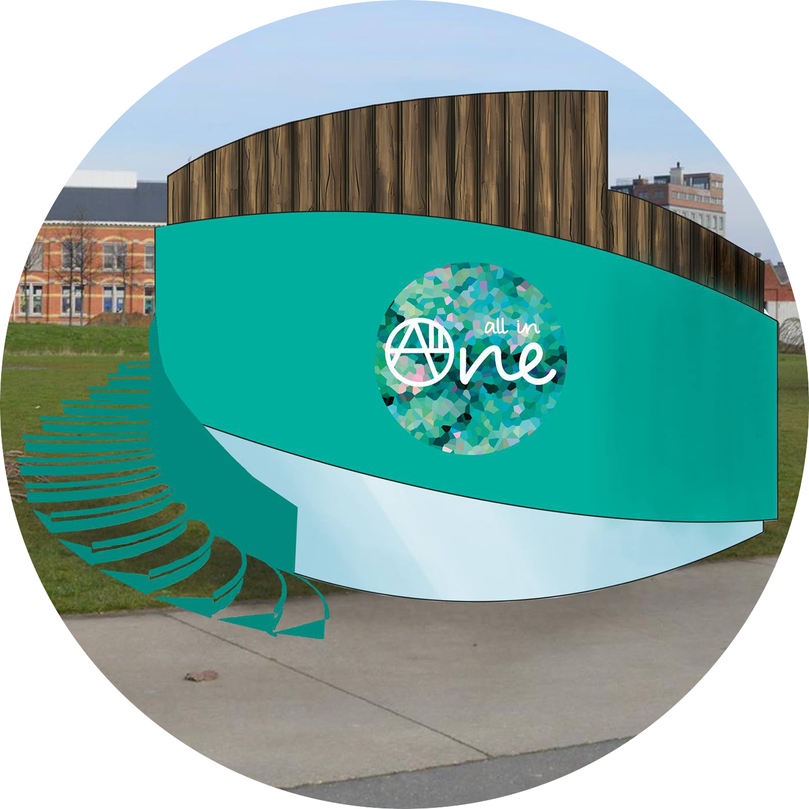

De hele zomer geopend
van zaterdag 25 juni 2016 t.e.m. zondag 25 september 2016
Maandag tot en met zaterdag: van 9u tot 20u
Zondag: van 9u tot 16u
Park Spoor Noord, 2060 Antwerpen
5 min. wandelen met bussen:
• Richting: Antwerpen Rooseveltplaats (halte 102190) met busnummer:
610, 620, 621 en 629.
• Richting: Meerle Dorp, Oostmale Immaculata, Schilde Wisselstraat, Sint-Job Kristis Koning (halte 102195) met busnummer:
610, 620, 621 en 629.
Wij zijn All in One, de oplossing voor jouw als single! Merk je ook niet dat in het dagelijks leven de meeste zaken gericht zijn op koppels en gezinnen. Er wordt helemaal geen rekening gehouden met de single persoon. Je woont alleen en leeft alleen. Ja, tuurlijk eet je graag eens gezellig mee met je vrienden, houdt feestjes en is je woonst een drukke plek. Maar voor de momenten dat het niet zo is, zijn wij er voor jouw!
Wij zijn er voor jouw! We geven je advies, helpen je en bieden je volledig maaltijdkitjes aan. Volledig op maat en aan betaalbare prijzen! Enkele van deze kitjes zijn breakfast-for-one, lunch-for-one, dinner-for-one en dessert-for-one. We kunnen onze maaltijden aan een goedkope prijs aanbieden, doordat wij alles in het groot aankopen bij lokale boeren en handelaars en per gerecht voor u verpakken. Zo zal je zelf geen eten meer moeten weggooien omdat je teveel hebt aangekocht en steun je de lokale boeren en handelaars.
Download onze app vol info, tips en tricks en krijg onze steun online 24/24.
Elke zondag: Kom op ons terras rustig ontbijten in het zonnetje. Proef ons overheerlijk vers gebakken brood en koffiekoeken. Neem à volonté beleg, eitjes, spek, worstjes, … Alles voor een lekker ontbijtje op een prachtige locatie. En dit voor maar 8€ per persoon. Het ontbijtbuffet staat voor u klaar tussen 9u en 13u.